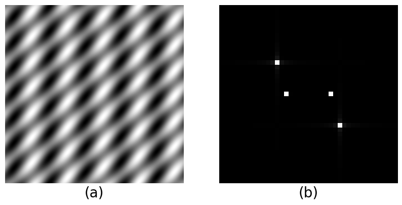

AIMP LABS wholeheartedly thanks Professor Dipti Prasad Mukherjee,
ECSU, ISI Kolkata for this hands-on tutorial as part of the advanced
image processing elective. The course is conducted for the Computer Science students of M.Tech. (CS) in their final year.
I. Image as Multidimensional Signal
A signal, or wave, is characterized by its frequency.
The frequncy acts like the identity of the signal.
Analysis of signal often invloves finding out its frequency.
Let us start with importing libraries.
# Import libraries
import numpy as np
from numpy import pi, cos, log10
from numpy import fft
import matplotlib.pyplot as plt
A simple sinusoidal signal that repeats itself once per 4 units of time (e.g., 4 seconds), is said to have a frequency
of \(\frac{1}{4}\) (i.e., 0.25 Hz). One can generate such signal by following the code snippet below.
# Samping paramaters
N = 64 # Total number of samples
T = 1 # Sampling rate
# Signal's inherent parameters
A = 1 # Amplitude of the sinusoid
phi = 0 # Phase of the sinusoid
f = 0.25 # Frequency of the sinusoid
# Signal generation
n = np.arange(N) # Discrete time axis
x = A*cos(2*pi*n*f*T+phi) # Sampled the sinusoid at discrete interval
# Computing frequency spectrum with DFT
F = fft.fft(x) # Frequency spectrum
...
# Plot the spectral graph
modF = abs(F) # DFT contains complex numbers, take |F|
f_axis = np.arange(0, 1, 1/N)
plt.subplot(2,1,2)
plt.stem(f_axis,modF,'r', markerfmt=" ", basefmt="-r")
Fig. 1 (a) Sinusoid and (b) its frequency. The frequency computed by Fourier transform is symmetric about 0.5 and hence we get two peaks: 0.5 \(\pm\)0.25.
The underlying Fourier transform of the signal \(x(n)\)is this:
\(F(k) = \sum_{n=0}^{N-1}x(n)e^{-j\frac{2\pi}{N}nk}\).
As expected we get a vertical line at frequency 0.25 in in Fig. 1(b). Note, the spectrum in Fig. 1(b) is symmetric
about 0.5, and hence we get two lines, i.e., at 0.5 ± 0.25. While Fig. 1(a) shows the signal in temporal view,
Fig. 1(b) reveals the underlying frequency of the signal in frequency (or spectral) view.
Extending the idea in 2D is straightforward. The diagram below shows a series of vertical stripes in sinusoidal fashion.
The direction of the sinusoid is horizontal, i.e., the wave propagates in a direction making zero angle angle = 0 with the x-axis.
How to generate such 2D image?
The following code generates the 2D image in Fig 2(a). What we see in Fig. 2(b) is its 2D DFT.
The 2D DFT is obtained by first applying np.fft2 on the grayscale image of the sinusoid and then centering the DFT with
np.fftshift. Since the DFT contains complex terms one has to be careful to display the magnitude of each term by
computing the absolute value abs().
x = np.arange(-500, 501, 1)
X, Y = np.meshgrid(x, x)
L = 200 # wavelength
theta = 0 # angle
sinusoid2d = np.sin(2*np.pi*(X*np.cos(theta) + Y*np.sin(theta)) / L)
Compute the 2D DFT, center it with np.fftshift,
take the absolute value, and reproduce the figure on right by plotting the
log of the absolute value.
Fig. 2 The idea of 1D-sinusoid is extended here. A 2D-sinusoidal grating in (a) is generated
as a grayscale image and its 2D spectral image in (b) illustrates the spatial frequency of the grating (occurs as symmetric coefficients, hence two dots).
Origin lies at teh center of the spectral image in (b).
Couple of points to note here. Each pixel in Fig. 2(b) denotes a frequency. Unlike the frequency in time that we saw in
Fig. 1(a), each frequency in Fig. 2(b) denotes a spatial frequency. The spatial frequency has two components: horizontal
spatial frequency and the vertical spatial frequency. The origin of the 2D spectrum is placed at the center.
Since the frequencies computed by DFT are symmetric to the origin (why?) we can see two dots in the Fig. 2(b).
Therefore, they mean the same thing, and each of them correspond to the "spatial frequency" of the sinusoidal pattern in Fig. 2(a).
Spatial frequency denotes how the 2D signal is repeating in 2D, or in space (spatial comes from the word space).
Whereas, the temporal frequency in Fig. 1(b) corresponds to the temporal repetition of the 1D time-signal.
What will happen if we increase the repetition of the 2d sinusoidal waves in Fig. 2(a)? In that case we can execute the same code
with L = 100 (since wavelength is inversely proportional to frequency, decreasing the wavelength will resul in increased repetition
of the wave) to get the desired wave in Fig. 3(a). Since the spatial frequency has increased, the increased value will appear further
from the origin in the spectral diagram. That is what we see in Fig. 3(b). The bigger frequency means the dots are further from the
origin (center of the image). Hence the gap between the two dots has increased in Fig. 3(b) compared to Fig. 2(b).
Fig. 3 (a) A sinusoidal grating with higher spatial frequency (compared to Fig. 2.)
(b) Higher spatial frequency means the (symmetric) frequency pair move further away from origin (i.e., image center)
in x-direction.
Fig. 4 (a) The sinusoid propagates in vertical direction. (b) As a result the (symmetric) frequency
pair will appear in the Y-axis now.
Fig. 5 (a) A slanted sinusoid (b) The frequency pair appears with non-zero
x and y-components. Note, how the direction of frquency axis matches with direction of propagation of
the slanted sinusoid.
What will happen if we rotate the horizontal sinusoid in vertical direction as shown in Fig. 4(a)? In such case the
sinusoid will repeat itself in vertical direction. So, we can expect the corresponding spatial frequency to show up
along the vertical axis. This is exactly the case with Fig. 4(b)
Any location in 2D is defined with two components: the x-component or the
horizontal component and the y-component of the vertical compionent. Similar
argument holds for spatial frequencies as well. For example, when the sinusoidal
pattern is neither vertical nor horizontal but tilted at an angle, the spatial
frequency in the 2D spectrum is no more on the vertical/horizontal axis. The
corresponding frequency moves to one of the quadrant as shown below.
II. Signal Superimposition for Images
In reality, we don't see signals or patterns with one component. The patterns
come as linear combination of many "basic" signals and also noise. Identifying
the constituent signals from the mixture is an important part of the image/signal
analysis. For example, consider this 1D composite signal:
Fig. 6 Composite signal as a result of signal superimposition
If we don't know what frequencies are present, and in what proportion, how do we
retrieve this information from the time domain observation alone? As expected,
Fourier transform comes to the rescue.
The folloiwng code shows the DFT plot and we can see the three frequencies. It
is a standard practice to consider only one half of the DFT plot since the
frequencies computed are symmetric in nature.
The folloiwng code shows the DFT plot and we can see the three frequencies. It is a standard practice to consider only one half of the DFT plot since the frequencies computed are symmetric in nature.
# Compute DFT
F = fft.fft(x)
# Calculate the frequency axis for plot
sr = 100 # assuming a smapling rate 100
N = len(X)
n = np.arange(N)
T = N/sr
freq = n/T
# Plot the full spectrum
# Hint: Use plt.stem(freq, abs(X))
# Get the one-sided specturm
n_oneside = N//2
# get one side of the frequency
f_oneside = freq[:n_oneside]
# normalize the amplitude
X_oneside = X[:n_oneside]/n_oneside
X_oneside = abs(X_oneside)
# Plot normalized spectrum
# Hint: Use plt.stem(f_oneside, X_oneside)
Fig. 7 Composite signal as a result of signal superimposition
This idea is easy to extend to 2D as well. Consider two kinds of sinusoidal images,
as shown in Fig. 8, by varying the frequency (or wavelength) and the orientation. One such example
is illustrated in the said figure. Following the principle of superposition the two spatial
signals can be added like the one-dimensional case.
For example, if we add the spatial signals (a) and (b) of Fig. 8, we obtain the composite image
Fig. 9(a).
Fig. 8 (a) and (b) illustrate two base signals which can be
superimposed to produce a composite signal like Fig. 9(a).

Fig. 9 (a) Composite signal (see Fig. 8 for reference). (b) The
two frequencies of the base signals appear as two pairs in the spectral image.
Generate the two gratings like before by tweaking L
and theta.
Superimpose the images by just simply adding them up like the one-dimensional case.
Compute DFT of the resultant image Fig. 9(a).
Compute absolute value and apply log of the DFT image, both elemenwise. Center it with np.fftshift.
Display and reproduce Fig. 9(b)
III. How does an edge in image manifest in the 2D spectral diagram?
Consider the unit step function in one dimension and its DFT. The figure in Fig. 10 shows the normalized frequency spectrum, i.e., one half of the spectrum.
Note, a sharp change in time domain creates ripples in frequency domain (this can be proved mathematically). We will see next that
something similar can be observed in spatial domain too.
Fig. 10 (a) Unit step function as time-domain signal
(b) The spectral diagram shows a series of frequencies.
From the assignment above it is clear that a step function in time
creates a series of frequencies in the spectral diagram. Now we shall see
how an equivalent edge structure in an image behaves in the similar fashion
in the 2D spectrum. Following assignment will walk you through it.
Create a 256 \(\times\)256 binary image of an horizintal edge like the left subfigure.
Compute the 2D DFT as before by followingthe steps
Zoom in on the central part and ensure that you see the pattern shown in (c)
Fig. 12 Horizintal edge in (a) is responsible for the vertical
frequncies in the spectral domain as shown in (b) and (c).
The last few assignments have shown that a sharp edge in 2D creates ripples in frequency domain.
We shall study this phenomenon a bit further by analyzing the square image as follows. The binary image of a square
has two vertical and two horizontal lines. Each pair of vertical and horizontal lines acts as edges, and produces a
series of frequencies in the spectral diagram. The horizintal pair of edges creates the vertical frequencies, and the vertical edges, horizonal.
Fig. 13 Sharp edges like (a) create frequencies in the spectral pattern (b).Fig. 14 When the edges are rotated the frequencies rotate too.
Compute the 2D DFT, center it, compute modulus elementwise,
apply log, and finally, display the DFT coefficients like Fig. 13(b).
Rotate the square of Fig. 13 (a) to produce the image Fig. 14(a).
Compute the DFT image of Fig. 14(a). Make sure you notice a similar change in orientation
of the spectral pattern as illustrated in Fig. 14(b).
Fig. 15 Sharp edges when smoothed out help to control the frequenciesFig. 16 Sharp edges when smoothed out help to control the frequencies
An interesting fact is, when you smooth the edge with an appropriate image filter,
say for example a Gaussian filter, you can control the rippling effect of the frequencies
in the spectral pattern. The following assignment illustrates this fact.
Smooth the image with ndimage.gaussian_filter() to create Fig. 15(a).
Compute the 2D DFT, center it, compute modulus elementwise,
apply log, and finally, display the DFT coefficients like Fig. 15(b).
In a similar manner smooth the rotated of image Fig. 14(a) to produce Fig. 16(a).
Compute the DFT image of Fig. 16(a). Make sure you notice a similar change in orientation
of the spectral pattern as illustrated in Fig. 16(b).
Fig. 17 As expected, the circle with sharp boundary in (a) also creates ripples in the
spectral pattern in (b).Fig. 18 The ripples in spectral pattern (b) are nicely attenuated by using
a smoothing filter that smoothens out the sharp boundary of (a).
Compute the 2D DFT, center it, compute modulus elementwise,
apply log, and finally, display the DFT coefficients like Fig. 17(b).
Smooth the image Fig. 17(a) with ndimage.gaussian_filter() to create Fig. 18(a).
Compute the DFT image of Fig. 18(a). Make sure you notice a similar change in spectral pattern as illustrated in Fig. 18(b).
Question is why am I putting this amount of emphasis on this apparently simple observation. This is
going to be clear in the folloiwng application. In brief, you can do some clever image engineering
in the spectral domain. However, doing that requires good design of image filter. The low-pass image filtering
puts some of the ideas we have played so far into practice.
IV. Low-Pass Image Filtering
In an image the lower spatial frequencies model the overall shape of the
visual content whereas the higher spatial frequencies are responsible for
the sharp edges like boundaries. If you have any means to "remove" the higher spatial
frequencies while keeping the lower ones, that method will be known as low-pass filtering. That
is because you are filtering-in the lower frequencies and filtering-out the higher
frequencies. If you apply inverse Fourier transform to the resultant filtered spectrum,
the image obtained will be a smoothed image where sharp edges will be blurred. The reason is that
you have filtered-out the higher spatial frequencies which lie resposnible for the
sharp edge/bar liek structures in the image.
In the following part, we shall pay our attention to a low-pass filtering method in
frquency domain using the idea above.
Fig. 19 (a) A grayscale image downloaded from the nice collection of CITE. (b) The 2D DFT of the image; note the frequenclies
close to the center of the image (i.e., the origin) are called lower frequencies. The ones far away
from the center are called higher frequencies. The job of a low-pass filter is to
zero out the higher frequencies of this 2D matrix while leaving the lower frequencies
intact. This low-pass filtering is done in next figure.
Convert this color image into a grayscale image like Fig. 19(a)
Compute the 2D DFT, center it, compute modulus elementwise,
apply log, and finally, display the DFT coefficients like Fig. 19(b).
Read the figure title well to make sure you understand the lower and higher spatial frequencies.
Fig. 20 (a) We create a binary circular mask to do point-by-point multiplication
with the Spectral matrix of Fig. 19(b). The idea is to zero out the higher frequencies while
allowing the lower frequencies. The resultant matrix of frequencies when subjected to inverse Fourier
transform will yeild the image on the right side (b). Don't miss the "ringing artifatcs" present
in the reconstructed figure. Why do you think they are there?
Compute the 2D DFT of Fig. 20(a). Do point by point multiplication of this (raw) DFT matrix with
the mask. I said "raw" because you should not compute absolute value of the 2D DFT.
After point-by-point multiplication apply inverse DFT to the resultant 2D matrix
Compare your reconstructed image with Fig. 20(b).
Fig. 21 (a) The ringing artifacts in the previous figure comes from the fact
that we did not smoothen out the boundary of the circular mask. Here our low-pass image filter will
contain the smoothened out version of the circular mask. (b) The reconstructed figure does not have the
ringing artifacts present in the earlier reconstruction.
Repeat the all subsequent steps of the previous assignment.
With the smooth circular mask the ringing artifacts should go away and you should get Fig. 21(b).
V. High-Pass Image Filtering
Opposite to low-pass filtering is high-pass filtering; in this case lower spatial frequencies
are zeroed out and higher spatial frequencies are kept intact. Creating a mask to do this operation
is very similar to what we have done in low-pass filtering. The difference is the mask in this case
is just the invert of the low-pass filter.
In the following part, we shall pay our attention to a high-pass filtering method in
frquency domain.
Fig. 22 (a) A bianry mask designed to zero out the lower frequencies while
maintaining the higher frequencies intact. The dark circle at the center denote zero values whereas the white
pixels denote otherwise.
(b) After restoring the image by applying inverse Fourier transform
to the masked DFT.
Compute the 2D DFT, center it, compute modulus elementwise,
apply log, and finally, display the DFT coefficients like Fig. 17(b).
Smooth the image Fig. 17(a) with ndimage.gaussian_filter() to create Fig. 18(a).
Compute the DFT image of Fig. 18(a). Make sure you notice a similar change in spectral pattern as illustrated in Fig. 18(b).
VI. Conclusion and further scope
The introductory concepts of signal processing techniques that are applicable to
image data find a number of important use cases. One for example is image restoration and the other
being object detection by pattern matching.
a) Image reconstruction
The frequency domain ideas are used extensively to restore already deraded images. Such
degradation can result from various processes like noisy acquisition or
poor resolution and many others. A concept popularly used in such tasks is convolution
which bears a direct connection with the frequency domain. The ideas of dicrete Fourier transform
helps in understanding the operations in convolution.
b) Pattern matching
Pattern matching relates to finding objects in images having visual similarity. As concolution
is used in image restoration tasks, we have a different technique widely used in pattern recognition called
as correlation. Like convolution we compute many of our filters for identifying visually
simialr objects in images using concepts already discussed here. In recent research, such ideas are extended
to benefit from deep learning theories.
VII. References
Digital Image Processing by Rafael C. Gonzalez and Richard E. Woods
Python Programming and Numerical Methods - A Guide for Engineers and Scientists (1st Edition - November 27, 2020),
Qingkai Kong, Timmy Siauw, Alexandre Bayen